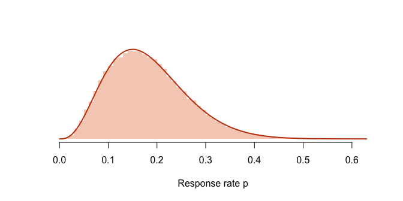

INLA-style skew-normal marginals for any log-posterior.
If you can write down the log-likelihood plus the log-prior, inlavanilla gives you approximate Bayesian inference for the parameters of your model: posterior marginals and draws, the marginal likelihood, and leave-one-out cross-validation. There is no sampler and no tuning, and small models take milliseconds. It runs the approximation pipeline of INLAvaan with nothing model-specific:
- a Laplace approximation at the posterior mode, with the Laplace estimate of the log marginal likelihood;
- a VB mean correction that recentres the Gaussian at a better estimate of the posterior mean;
- skew-normal marginals, one per parameter, fitted to scans of the log-posterior;
- Gaussian copula draws for any function of the parameters.
Stages 2 and 3 are optional and independent: vb = FALSE skips the VB correction, and marginals = "gaussian" keeps the Gaussian marginals instead of scanning for skew-normal ones. With both, you get the Laplace approximation alone.
Give loo() or waic() the log-likelihood as one term per observation, and they estimate the model’s predictive accuracy from the fit alone, with no refits and no draws.
The package is pure R and small. Its only dependency outside base R is cli.
Installation
You can install the development version of inlavanilla from GitHub with:
# install.packages("pak")
pak::pak("haziqj/inlavanilla")Example
A trial records 3 responders out of 20 patients. With a uniform prior on the response rate \(p\), the posterior is \(\text{Beta}(4, 18)\): skewed, and bounded at zero.
inla_vanilla() works on an unconstrained scale, so we write the log-posterior in terms of \(\vartheta = \text{logit}(p)\). The prior is stated for \(p\), so it carries the Jacobian \(dp / d\vartheta = p(1 - p)\):
library(inlavanilla)
logpost <- function(theta, y, n) {
p <- plogis(theta[["logit_p"]])
dbinom(y, n, p, log = TRUE) +
dbeta(p, 1, 1, log = TRUE) + # prior on p ...
log(p) + log1p(-p) # ... and the Jacobian
}
fit <- inla_vanilla(logpost, init = c(logit_p = 0), y = 3, n = 20)
#> ✔ Found the posterior mode in 6 iterations [3ms]
#> ✔ VB mean correction, max shift 0.17σ [28ms]
#> ✔ Fitted 1 skew-normal marginal [20ms]
fit
#> ── INLAvanilla ───────────────────────────────────────── Skew-normal + VB ──
#>
#> Log marginal likelihood: -3.05 · Converged in 6 iterations (55ms)
#>
#> Mean SD 2.5% 50% 97.5% Mode
#> 1 logit_p -1.605 0.582 -2.845 -1.569 -0.562 -1.494The summary is on the logit scale. sampling() draws from the approximate posterior, and its fun argument maps each draw back to \(p\), or to any other quantity of interest:
set.seed(1)
p <- sampling(
fit,
nsamp = 1e5,
fun = function(theta) plogis(theta[["logit_p"]])
)
rbind(
inlavanilla = quantile(p, c(0.025, 0.5, 0.975)),
exact = qbeta(c(0.025, 0.5, 0.975), 4, 18)
)
#> 2.5% 50% 97.5%
#> inlavanilla 0.05443460 0.1723549 0.3645844
#> exact 0.05446357 0.1720895 0.3634240The approximation matches the exact posterior, skew included:
hist(p, breaks = 80, freq = FALSE, border = NA, col = "#F5D0BE",
main = NULL, xlab = "Response rate p", ylab = NULL, yaxt = "n")
curve(dbeta(x, 4, 18), add = TRUE, lwd = 2, col = "#C2410C")
summary(fit) adds diagnostics for each stage of the approximation, and plot(fit) draws the marginals. The Get started vignette works through a multi-parameter example: it checks the approximation against the exact posterior, and covers gradients, derived quantities and model comparison.
References
Jamil, H., & Rue, H. (2026a). Approximate Bayesian inference for structural equation models using integrated nested Laplace approximations (arXiv:2603.25690 [stat.ME]). arXiv. https://doi.org/10.48550/arXiv.2603.25690
Jamil, H., & Rue, H. (2026b). Implementation and workflows for INLA-based approximate Bayesian structural equation modelling (arXiv:2604.00671 [stat.CO]). arXiv. https://doi.org/10.48550/arXiv.2604.00671